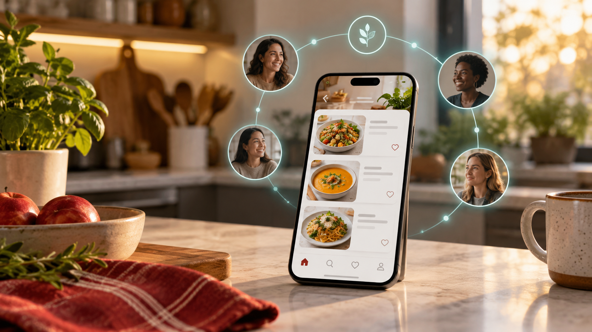

When you are being attacked and cannot reach the phone
If you cannot tap, type or hold the phone, secret words can start the SOS flow when the phone can hear you.

HEARD
HEARD is hidden inside a recipe app because danger often becomes worse when an attacker sees a victim calling for help. It is built for the moments when the phone is out of reach, taken away, unsafe to touch, or too visible to use.
During an attack, there may be no time to unlock a phone, search for police, explain what is happening or press call. If the attacker realizes help has been called, the violence can escalate faster. HEARD is designed so a safety signal can begin quietly, while the app still looks like ordinary recipes.
Types of help
If you cannot tap, type or hold the phone, secret words can start the SOS flow when the phone can hear you.
The outside looks like recipes. The hidden safety action can begin without showing the attacker a police call screen first.
With the right permissions, the app can listen for the safety phrase while it is not on screen, quietly there when a button is not possible.
If the device is powered, nearby enough and allowed to listen, the victim does not have to hold it to ask for help.
HEARD can offer quiet support, practical resources and a place to think before the victim is ready to act.
For the person thinking: “My ribs are bruised, not broken, so I do not have enough proof to report it, even though it hurts as if they were broken.”
Support chat and survivor-to-survivor conversation can give words to fear, shame and hesitation.
Trusted contacts, emergency numbers and support resources change with the language and country context.
Current demo
Today it demonstrates the main safety paths: secret-word SOS, trusted people, hidden recording, support conversation, community and help resources. It is a demo, not a public emergency service yet.
Download
The demo is for trusted reviewers, advocates and partners to understand the experience. It is not a public safety service yet.
Android
For Android test phones used to review the emergency flow.
Download Android APK Demo build, not a Play Store release.iPhone
For reviewers who need to see how the iPhone experience could feel.
Download iPhone demo file This file is for developers and reviewers; real iPhone installation needs Apple signing or TestFlight.Next steps
When SOS starts, trained responders can alert trusted people, call back safely and keep the situation moving toward help.
Direct police help must be built with approved emergency partners, so the promise is real and lawful.
The AI helper should be stronger, safer and reviewed by trauma specialists, with human escalation when needed.
NGOs, counselors and safe centers can become trusted support points with clear roles and accountability.
The app already points toward protected recordings; the next step is a professional evidence package that courts and advocates can review.
A real iPhone path should include watch signals, safety check-ins and Apple-approved ways to ask for help.
HEARD